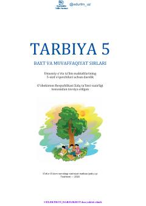

T55-sinf o‘quvchilari uchun vatanparvarlik va odob-axloq qoidalarini o‘rgatuvchi darslik.
Ushbu darslik umumiy o‘rta ta’lim maktablarining 5-sinf o‘quvchilari uchun mo‘ljallangan bo‘lib, vatanparvarlik, odob-axloq va insoniy fazilatlarni shakllantirishga qaratilgan. Kitob o‘quvchilarga ona Vatanni sevish, ustoz va ota-onani hurmat qilish hamda jamiyatda o‘z o‘rnini topish bo‘yicha bilim va ko‘nikmalar beradi.